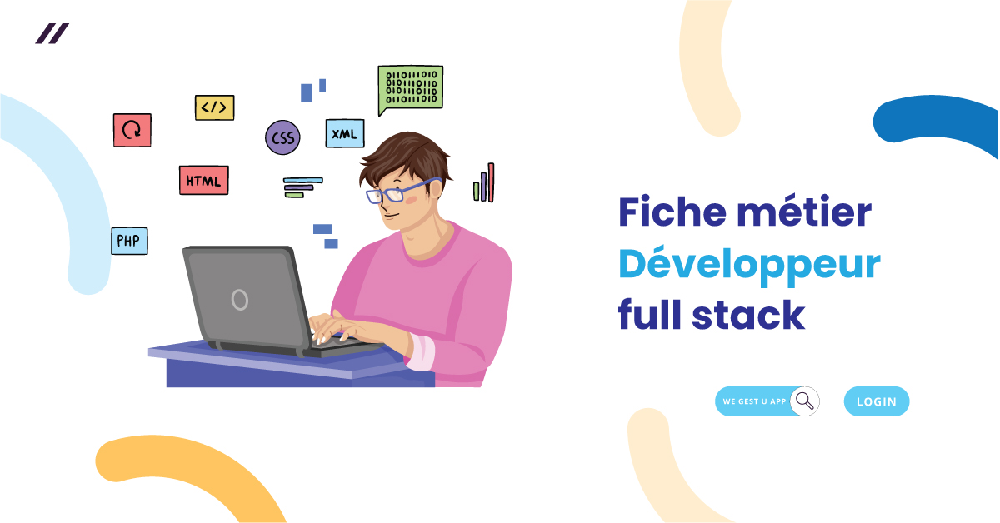

Un développeur fullstack est un programmeur capable de travailler à la fois sur le frontend (partie visible d'une application) et sur le backend (partie côté serveur). Cela signifie qu'il maîtrise l'ensemble des technologies nécessaires pour développer une application web ou mobile complète, de l'interface utilisateur jusqu'à la base de données et la gestion du serveur.
 Retour à la page d'accueil